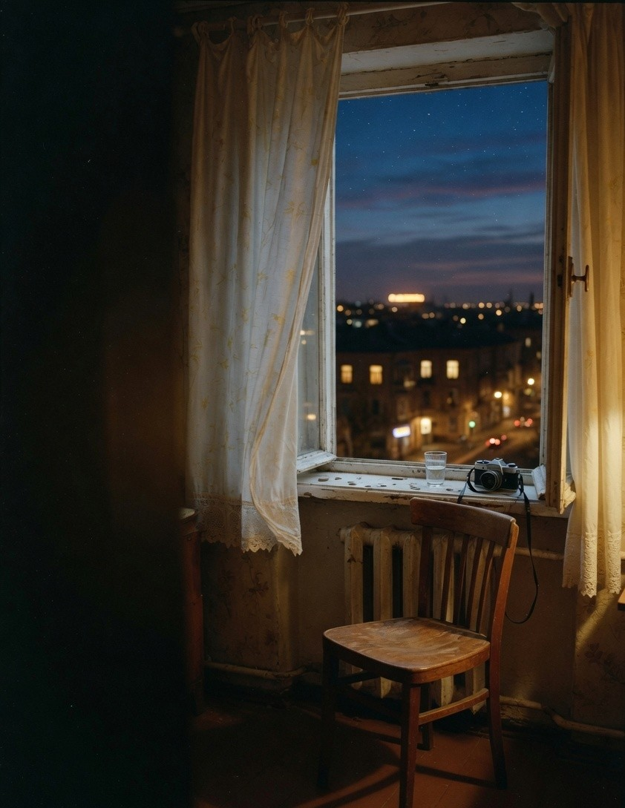

Plate 03 / 01
Plain English
A running diary of what I am actually learning with language models — no liturgy, no leaderboards. If a sentence needs a glossary, it goes back in the drawer.
Read the notes01 — assembled in public
The full alphabet is
still being set.
I learn how language models work, then I say it back in words anyone can read. I photograph the cities I move through. I keep a public notebook.
↓ continue
Most writing about AI is a closed drawer: the same ten words, set over and over.
Plate 03 / 01
A running diary of what I am actually learning with language models — no liturgy, no leaderboards. If a sentence needs a glossary, it goes back in the drawer.
Read the notesPlate 03 / 02
Indian cities are the hardest interface I know. I have been pulling on a simple thread: who is responsible for what, on which ward, in language a resident can use.
Read the notePlate 03 / 03
A visual diary of Delhi, Hyderabad, and Bengaluru — the hour when the sodium lights win. Pictures first, captions later. The feed lives on Instagram.
Open InstagramA rule for learning machines in public, borrowed from the composing room.
Wards, budgets, and why the prompt bar is easier than a municipal office.
You do not wait for the full case. You ink what you have and print tonight.

I live between Hyderabad and Bengaluru. I grew up taking pictures and arguing about how the country is run. Now most evenings are spent trying to understand language models well enough to explain them without the costume.
The cities keep failing in familiar ways. The models keep arriving faster than the sentences we have for them. This site is the notebook — a place to set the type while it is still warm.
I care about speech, about leaving people alone, and about municipal things that do not trend. I am a power user of the tools I write about. I am also, still, a beginner. Both can be true on the same page.
The fastest way to reach me is X. Pictures live on Instagram. If you have a small civic problem, a plain-English question, or a city I should walk, send it.